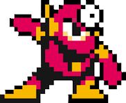
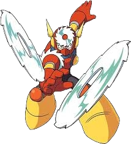

Classic Game Room presents a gameplay walkthrough video of Capcom's Mega Man 2 for the NES. It's time to take on Dr. Wily and his eight robot henchmen in one of the most beloved games of this challenging side scrolling series. The machine factory of Metalman's stage is chosen second for a chance to do some item farming and obtain a couple of energy tanks. Featuring gameplay from the Mega Man Anniversary Collection on the Nintendo Gamecube and commentary by CGR's Kevin.
Mega Man (known as Rockman in Japan) is a iconic Capcom video game franchise launched in 1987, featuring a sentient android designed by Dr. Light to protect the world from the evil Dr. Wily. The series is renowned for its side-scrolling,non-linear gameplay, allowing players to steal abilities from defeated Robot Masters.
Powers and Abilities- Superhuman Physical Characteristics, Self-Sustenance (Types 1, 2 and 3), Immortality (Non-Combat Applicable Type 6 & 8:As long as his IC chip is still in tact he can be rebuilt as many times as one wants), Resistance to Time Stop (All Mega Man 2 Robot Masters have a device installed that allows them to resist Flash Man's Time Stopper Weaknesses- Metal Man’s primary weakness in Mega Man 2 is his own weapon, the Metal Blade, which destroys him in 2 hits or less. As a secondary option, the Quick Boomerang is highly effective (4/7 hits), while the Atomic Fire (charged) also works. He is famously weak to his own weapon due to a design flaw.